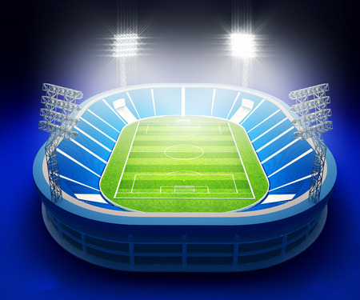

Centro Social y Recreativo Español
Novedades:
JORNADA HISTORICA!!!!!:
NOTICION! En el día de ayer, el Gallego firmo un acuerdo para la cesion de tierras en el Predio de la Base Aerea de El Palomar. Ahí se construirá el futuro estadio del Gallego.
Otras noticias:
De a poco el club va abriendo las puertas para que se puedan realizar todas las actividades que se hacian antes de la pandemia, en noviembre arranca el torneo de AFA para nuestro equipo, que estara compitiendo en la Primera D
Nuestros equipos de Basquet y Futsal retomaron la actividad competitiva, donde en futsal competiremos en la liga LIFA y en basquet lo haremos desde el metropolitano en los varones y el federal en femenino, en ambas categorias hay muchas expectativas
Atencion! A partir del mes de Septiembre habra un aumento en la cuota, ademas se debe pagar antes del dia 10 o se cobrara un recargo del 10%